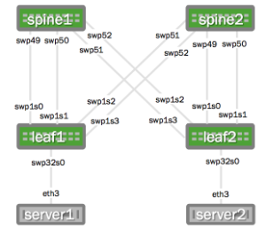
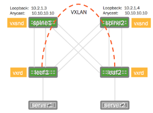

LNV Full Example
Lightweight Network Virtualization (LNV) is a technique for deploying VXLANs without a central controller on bare metal switches. This a full example complete with diagram. Please reference the Lightweight Network Virtualization chapter for more detailed information. This full example uses the recommended way of deploying LNV, which is to use Anycast to load balance the service nodes.
LNV is a lightweight controller option. Please contact Cumulus Networks with your scale requirements and we can make sure this is the right fit for you. There are also other controller options that can work on Cumulus Linux.
Contents
Example LNV Configuration
The following images illustrate the configuration:
|
Physical Cabling Diagram  |
Network Virtualization Diagram  |
Want to try out configuring LNV and don't have a Cumulus Linux switch? Check out Cumulus VX .
Feeling Overwhelmed? Come join a Cumulus Boot Camp and get instructor-led training!
Layer 3 IP Addressing
Here is the configuration for the IP addressing information used in this example:
|
spine1: /etc/network/interfaces auto loiface lo inet loopback address 10.2.1.3/32 address 10.10.10.10/32 auto eth0iface eth0 inet dhcpauto swp49iface swp49 address 10.1.1.2/30 auto swp50iface swp50 address 10.1.1.6/30 auto swp51iface swp51 address 10.1.1.50/30 auto swp52iface swp52 address 10.1.1.54/30 |
spine2: /etc/network/interfaces auto loiface lo inet loopback address 10.2.1.4/32 address 10.10.10.10/32 auto eth0iface eth0 inet dhcpauto swp49iface swp49 address 10.1.1.18/30 auto swp50iface swp50 address 10.1.1.22/30 auto swp51iface swp51 address 10.1.1.34/30 auto swp52iface swp52 address 10.1.1.38/30 |
|
leaf1: /etc/network/interfaces auto loiface lo inet loopback address 10.2.1.1/32 vxrd-src-ip 10.2.1.1 vxrd-svcnode-ip 10.10.10.10auto eth0iface eth0 inet dhcpauto swp1s0iface swp1s0 address 10.1.1.1/30auto swp1s1iface swp1s1 address 10.1.1.5/30auto swp1s2iface swp1s2 address 10.1.1.33/30auto swp1s3iface swp1s3 address 10.1.1.37/30auto vni-10iface vni-10 vxlan-id 10 vxlan-local-tunnelip 10.2.1.1 mstpctl-bpduguard yes mstpctl-portbpdufilter yesauto vni-2000iface vni-2000 vxlan-id 2000 vxlan-local-tunnelip 10.2.1.1 mstpctl-bpduguard yes mstpctl-portbpdufilter yesauto vni-30iface vni-30 vxlan-id 30 vxlan-local-tunnelip 10.2.1.1 mstpctl-bpduguard yes mstpctl-portbpdufilter yesauto br-10iface br-10 bridge-ports swp32s0.10 vni-10auto br-20iface br-20 bridge-ports swp32s0.20 vni-2000auto br-30iface br-30 bridge-ports swp32s0.30 vni-30 |
leaf2: /etc/network/interfaces auto loiface lo inet loopback address 10.2.1.2/32 vxrd-src-ip 10.2.1.2 vxrd-svcnode-ip 10.10.10.10auto eth0iface eth0 inet dhcpauto swp1s0iface swp1s0 inet static address 10.1.1.17/30auto swp1s1iface swp1s1 inet static address 10.1.1.21/30auto swp1s2iface swp1s2 inet static address 10.1.1.49/30auto swp1s3iface swp1s3 inet static address 10.1.1.53/30auto vni-10iface vni-10 vxlan-id 10 vxlan-local-tunnelip 10.2.1.2 mstpctl-bpduguard yes mstpctl-portbpdufilter yesauto vni-2000iface vni-2000 vxlan-id 2000 vxlan-local-tunnelip 10.2.1.2 mstpctl-bpduguard yes mstpctl-portbpdufilter yesauto vni-30iface vni-30 vxlan-id 30 vxlan-local-tunnelip 10.2.1.2 mstpctl-bpduguard yes mstpctl-portbpdufilter yesauto br-10iface br-10 bridge-ports swp32s0.10 vni-10auto br-20iface br-20 bridge-ports swp32s0.20 vni-2000auto br-30iface br-30 bridge-ports swp32s0.30 vni-30 |
Quagga Configuration
The service nodes and registration nodes must all be routable between each other. The L3 fabric on Cumulus Linux can either be BGP or OSPF. In this example, OSPF is used to demonstrate full reachability.
Here is the Quagga configuration using OSPF:
|
spine1:/etc/quagga/Quagga.conf interface lo ip ospf area 0.0.0.0interface swp49 ip ospf network point-to-point ip ospf area 0.0.0.0!interface swp50 ip ospf network point-to-point ip ospf area 0.0.0.0!interface swp51 ip ospf network point-to-point ip ospf area 0.0.0.0!interface swp52 ip ospf network point-to-point ip ospf area 0.0.0.0!!!!!router-id 10.2.1.3router ospf ospf router-id 10.2.1.3 |
spine2: /etc/quagga/Quagga.conf interface lo ip ospf area 0.0.0.0interface swp49 ip ospf network point-to-point ip ospf area 0.0.0.0!interface swp50 ip ospf network point-to-point ip ospf area 0.0.0.0!interface swp51 ip ospf network point-to-point ip ospf area 0.0.0.0!interface swp52 ip ospf network point-to-point ip ospf area 0.0.0.0!!!!!router-id 10.2.1.4router ospf ospf router-id 10.2.1.4 |
|
leaf1: /etc/quagga/Quagga.conf interface lo ip ospf area 0.0.0.0interface swp1s0 ip ospf network point-to-point ip ospf area 0.0.0.0!interface swp1s1 ip ospf network point-to-point ip ospf area 0.0.0.0!interface swp1s2 ip ospf network point-to-point ip ospf area 0.0.0.0!interface swp1s3 ip ospf network point-to-point ip ospf area 0.0.0.0!!!!!router-id 10.2.1.1router ospf ospf router-id 10.2.1.1 |
leaf2: /etc/quagga/Quagga.conf interface lo ip ospf area 0.0.0.0interface swp1s0 ip ospf network point-to-point ip ospf area 0.0.0.0!interface swp1s1 ip ospf network point-to-point ip ospf area 0.0.0.0!interface swp1s2 ip ospf network point-to-point ip ospf area 0.0.0.0!interface swp1s3 ip ospf network point-to-point ip ospf area 0.0.0.0!!!!!router-id 10.2.1.2router ospf ospf router-id 10.2.1.2 |
Host Configuration
In this example, the servers are running Ubuntu 14.04. A trunk must be mapped from server1 and server2 to the respective switch. In Ubuntu this is done with subinterfaces.
|
server1 auto eth3.10iface eth3.10 inet static address 10.10.10.1/24auto eth3.20iface eth3.20 inet static address 10.10.20.1/24auto eth3.30iface eth3.30 inet static address 10.10.30.1/24 |
server2 auto eth3.10iface eth3.10 inet static address 10.10.10.2/24auto eth3.20iface eth3.20 inet static address 10.10.20.2/24auto eth3.30iface eth3.30 inet static address 10.10.30.2/24 |
Service Node Configuration
|
spine1:/etc/vxsnd.conf [common]# Log level is one of DEBUG, INFO, WARNING, ERROR, CRITICAL#loglevel = INFO# Destination for log message. Can be a file name, 'stdout', or 'syslog'#logdest = syslog# log file size in bytes. Used when logdest is a file#logfilesize = 512000# maximum number of log files stored on disk. Used when logdest is a file#logbackupcount = 14# The file to write the pid. If using monit, this must match the one# in the vxsnd.rc#pidfile = /var/run/vxsnd.pid# The file name for the unix domain socket used for mgmt.#udsfile = /var/run/vxsnd.sock# UDP port for vxfld control messages#vxfld_port = 10001# This is the address to which registration daemons send control messages for# registration and/or BUM packets for replicationsvcnode_ip = 10.10.10.10# Holdtime (in seconds) for soft state. It is used when sending a# register msg to peers in response to learning a <vni, addr> from a# VXLAN data pkt#holdtime = 90# Local IP address to bind to for receiving inter-vxsnd control trafficsrc_ip = 10.2.1.3[vxsnd]# Space separated list of IP addresses of vxsnd to share state withsvcnode_peers = 10.2.1.4# When set to true, the service node will listen for vxlan data traffic# Note: Use 1, yes, true, or on, for True and 0, no, false, or off,# for False#enable_vxlan_listen = true# When set to true, the svcnode_ip will be installed on the loopback# interface, and it will be withdrawn when the vxsnd is no longer in# service. If set to true, the svcnode_ip configuration# variable must be defined.# Note: Use 1, yes, true, or on, for True and 0, no, false, or off,# for False#install_svcnode_ip = false# Seconds to wait before checking the database to age out stale entries#age_check = 90 |
spine2:/etc/vxsnd.conf [common]# Log level is one of DEBUG, INFO, WARNING, ERROR, CRITICAL#loglevel = INFO# Destination for log message. Can be a file name, 'stdout', or 'syslog'#logdest = syslog# log file size in bytes. Used when logdest is a file#logfilesize = 512000# maximum number of log files stored on disk. Used when logdest is a file#logbackupcount = 14# The file to write the pid. If using monit, this must match the one# in the vxsnd.rc#pidfile = /var/run/vxsnd.pid# The file name for the unix domain socket used for mgmt.#udsfile = /var/run/vxsnd.sock# UDP port for vxfld control messages#vxfld_port = 10001# This is the address to which registration daemons send control messages for# registration and/or BUM packets for replicationsvcnode_ip = 10.10.10.10# Holdtime (in seconds) for soft state. It is used when sending a# register msg to peers in response to learning a <vni, addr> from a# VXLAN data pkt#holdtime = 90# Local IP address to bind to for receiving inter-vxsnd control trafficsrc_ip = 10.2.1.4[vxsnd]# Space separated list of IP addresses of vxsnd to share state withsvcnode_peers = 10.2.1.3# When set to true, the service node will listen for vxlan data traffic# Note: Use 1, yes, true, or on, for True and 0, no, false, or off,# for False#enable_vxlan_listen = true# When set to true, the svcnode_ip will be installed on the loopback# interface, and it will be withdrawn when the vxsnd is no longer in# service. If set to true, the svcnode_ip configuration# variable must be defined.# Note: Use 1, yes, true, or on, for True and 0, no, false, or off,# for False#install_svcnode_ip = false# Seconds to wait before checking the database to age out stale entries#age_check = 90 |